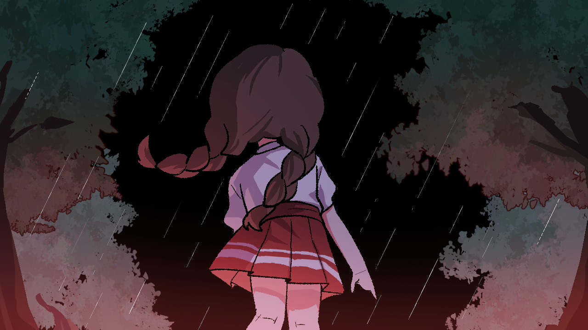

GAME DEVELOPMENT / GAME JAM 02
雨天の迷宮
敵の巡回・追跡を避け、ステージ内に配置されたアイテム（傘）を探す探索・逃走型ゲーム。2年次ゲームジャムのチーム作品です。
開発環境
C++ / DxLib
ステージ
3種類の固定マップをランダム選択
本人担当
マップ制作・選定処理・雨などの演出調整

作品の構成
開始時に3つのステージCSVからランダムで1つ選び、そのマップを読み込んで配置します。各ステージにはプレイヤー・傘・敵の配置データと、敵の巡回ルートを指定した別CSVが用意されています。マップを毎回自動生成する方式ではなく、あらかじめ作成したマップから選ぶ方式です。
敵に追われる緊張感と、傘を探して回収する目的があるゲームです。敵のAIやすべてのキャラクター挙動を自作したという意味ではありません。
担当した実装・制作
- マップ選定：乱数から0〜2のインデックスを選び、Stage1〜3のCSVと対応する敵の巡回ルート・配置情報を読み込む仕組み。
- マップ制作：ステージごとに42列×27行のタイル配置CSVを作成。通行可能な床・障害物・周囲の壁などの配置を組み合わせました。
- 雨の演出：雨画像を遠景・近景の2層でスクロールし、移動速度・透明度・カメラ追従量を変えて奥行きと雨量を表現しました。
雨の演出で工夫したこと
遠景の雨は薄く遅く、近景の雨は濃く速く流れるように設定しました。さらにカメラ移動量に異なる係数を適用し、画面端で雨が途切れないよう、画像を縦横に繰り返して描画しています。
遠景
速度 (-60, +120) / 透明度 70 / カメラ追従 0.08
近景
速度 (-160, +300) / 透明度 160 / カメラ追従 0.22
画面端
スクロール位置を余りで処理し、画像を4枚配置して継ぎ目を抑制

資料の状態
ステージ選択はScene/Loading/LoadingScene.cpp、マップ・配置データはResource/Stage/およびResource/CreatePoint/、雨はScene/InGame/InGameScene.cppで確認できます。
今回確認したものはソースと画像素材であり、ビルド・実機プレイは未実施です。ゲーム本体やチームのソース一式は、公開許可・素材利用条件を確認するまでサイトから配布しません。GitHubリポジトリの閲覧権限は未確認のためリンクは掲載していません。